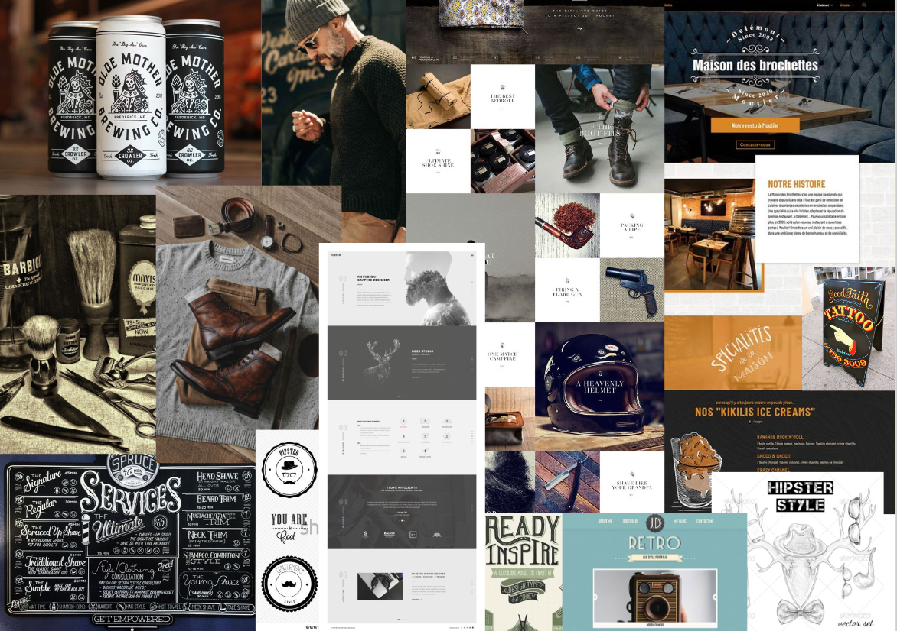

Dette første tema giver en grundlæggende indføringtil de mest anvendte redskaber i enmultimediedesigners værktøjskasse. Redskaberne udgørfundamentet for resten af din uddannelsepå MMD.Du vil blive introduceret til grundlæggende fagligebegreber inden for design af digitalebrugergrænseflader, digital indholdsproduktion, digitalkommunikation og responsivt webdesign.Du lærer at sætte websider op i html og css og fårde første hands-on færdigheder inden forudarbejdelse af grafik og billedbehandling i Photoshop,opsætning af tekst og billeder i Adobe XD
Web

01.Opgave

I forløbet 02-web skulle jeg lave en responsiv hjemmeside med udgangspunkt i designstilen hipster style. Her fik jeg kendskab til faglige begreber inden for design af digitale brugergrænseflader, digital indholdsproduktion, digital kommunikation og responsivt webdesign.
02.Analyse
Jeg lærte blandt andet at analysere og undersøge en designstil. ved hjælp af farveteori, typografi, komposition, style tile mm. kunne jeg få en overordnet design forståelse for hipster style. Hjemmesider som benytter sig af Hipster Style er ofte cafeer, barbershops eller tattoo shops. Hjemmesiderne har ofte store overskrifter med meget fokus på logoet, som ofte også er en del af firmanavnet og typografien. Mange af hjemmesiderne har benyttet sig af en splash billede eller splash video på startsiden. Farverne er ofte naturlige afdæmpede farver med et retro patina look. Billederne er ligeledes redigeret til at have et faded, grumset patina udtryk. Typografien er en blanding af groteske, antikva og gotiske fonte, det må gerne se lidt eksklusivt ud.